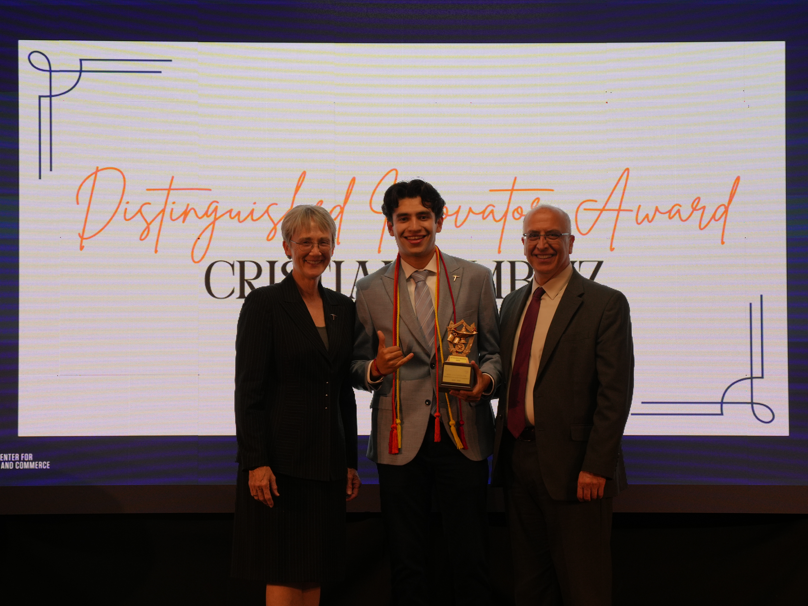

I am Cristian Ambriz, an Industrial and Systems Engineering student at The University of Texas at El Paso. I am passionate about engineering, entrepreneurship, leadership, and helping students find opportunities in higher education.
Industrial & Systems Engineering | UTEP
Cristian Ambriz
Engineering Student. Entrepreneur. Student Leader.
I build at the intersection of engineering, leadership, and entrepreneurship. I focus on solving problems, understanding complex systems, and creating better pathways to move forward with confidence.



4.00
Major GPA
3.50
Overall GPA
About Me
Focused on systems, people, and opportunity.
My experience includes IMSE department outreach, international student recruitment, technical presentations, operational improvement, sales, marketing, and mentoring students as they transition into college.
Portfolio Map
Choose a path through the work.
Resume
Engineering resume with leadership momentum.
B.S. Industrial and Systems Engineering
The University of Texas at El Paso | Anticipated December 2027
4.00 Major GPA
3.50 Overall GPA
English + Spanish Bilingual
Open Resume PDF
Experience
Practical engineering, outreach, and business experience.
Undergraduate Assistant | UTEP IMSE Department
Deliver engineering presentations, support recruitment events, guide prospective students and families, and demonstrate automation and manufacturing technologies through interactive robotics systems.
Sales & Marketing Intern | DropDev
Presented AI-powered web solutions to businesses, researched client needs, improved sales conversations, and supported brand visibility through focused marketing strategy.
Consulting Services Intern | SEI Stackpole Electronics
Designed warehouse layout and signage improvements, analyzed sales performance reports, and translated technical procedures for Spanish-speaking employees.
Projects
Built through engineering thinking and entrepreneurial action.
Featured Venture
Active Business
CA Natural
CA Natural is a natural personal care brand focused on safe, healthy products made with quality ingredients. The flagship product is a shampoo formulated for growth and strong hair, made in Mexico, and the brand has been pitched at multiple competitions.
Top 10
Miners Pitch Finalist
Sold Out
All Competitions
3+
Public Pitches

Volunteer
Service that expands access to STEM pathways.
Institute of Industrial & Systems Engineers
Outstanding Member recognized for active participation in chapter initiatives, recruitment events, student outreach, fundraising, and professional development.
Community Outreach
Supported STEM engagement by judging LEGO Robotics Competition projects and giving constructive feedback to younger students exploring engineering.
Leadership
Leading with initiative, clarity, and follow-through.
Fundraising Director
Organizes events and partnerships with local businesses to support first-generation student success, certifications, events, and student development programs.
TACOS & TECH-ILA Pitch Competition
Pitched CA Natural, presented a product sample, and used the experience to sharpen entrepreneurial direction and confidence.
Leadership Development
Nominated to The National Society of Leadership and Success and building leadership skills through foundations and advanced leadership programming.
Contact